Služby
Poskytujeme komplexní služby zubní péče ve všech oborech stomatologie včetně implantologie a mikroskopické endodoncie a reendodoncie.
Naši lékaři se pravidelně vzdělávají u tuzemských i zahraničních lektorů a poskytují péči podle nejmodernějších postupů a na nejvyšší možné úrovni.
Jsme vybaveni nejmodernějším vybavením včetně operačního mikroskopu.
Záchovná stomatologie
Jejím cílem je zachování zubu poškozeného kazem, úrazem či zánětem. Jedná se hlavně o pečetění fisur, preventivní výplně, výplně a endodontické ošetření zubů (ošetření kořenových kanálků). Veškeré ošetření je prováděno v lokální anestezii a je zcela bezbolestné.
Pečetění fisur a preventivní výplně
Pečetění fisur je preventivní metoda ke snížení rizika zubního kazu. Provádí se časně po prořezání zubu, s hlubokým systémem fisur (rýh) na povrchu zubu, do dutiny ústní kdy ještě není zubní sklovina dostatečně mineralizovaná a je více náchylná k zubnímu kazu. Ošetřují se hlavně první a druhé stálé stoličky, v indikovaných případech je možné pečetit i dočasné zuby. Pečetění není možné provést u nespolupracujících pacientů, pacientů s nedostatečnou hygienou a u vysoké kazivosti chrupu. Výkon nenahradí pečlivou domácí hygienu dutiny ústní!
Postup zhotovení: Povrch zubu se na výkon připraví odstraněním plaku a povrchových nečistot rotačním kartáčkem a abrazivní pastou. Poté se povrch skloviny naleptá kyselinou fosforečnou, důkladně opláchne a osuší. Následuje aplikace pečetidla a jeho vytvrzení polymerační lampou (intenzivním modrým světlem). Následuje artikulace výplně, aby nepřekážela.
Preventivní výplní se ošetřují počínající zubní kazy, které zasahují zubní tkáně jen minimálně. Zjednodušeně řečeno jde o minimální fotokompozitní (bílou) výplň často doplněnou zapečetěním systému fisur zubu.
Výplně amalgámové
Jedná se o výplň zhotovenou ze slitiny rtuti se stříbrem, mědí a cínem. Jde o nejstarší a nejdéle prozkoumaný výplňový materiál s dobrými mechanickými vlastnostmi a nenáročným pracovním postupem. Materiál má ale řadu nevýhod a proto je jeho požití například v severských státech od roku 2008 zakázáno. Jeho součástí je rtuť a její uvolňování a působení na zdraví člověka je předmětem mnoha diskusí. Další nevýhodou je nulová vazba na tkáně zubu a tím nutná speciální úprava tvaru kavity (díry po kazu), která často vede k devastaci zbylých zubních tkání jen proto, aby výplň nevypadla. Dalším problémem je tzv. tok, amalgám ani po ztuhnutí není tvarově stálý a při jeho zatížení kousáním dochází k tvarovým změnám, které často negativně působí na okolní tkáně zubu a mohou skončit jeho prasknutím. Další nevýhodou jsou poměrné přísné požadavky na zbylé tkáně, tak aby nebyl zub ohrožen rizikem jeho rozlomení a aby zároveň výplň v zubu držela, proto nastává celá řada situací, kdy tento materiál není možné použít a je potřeba volit jinou alternativu.
Amalgám se vyskytuje ve dvou variantách.
Nedózovaný (ručně míchaný), jedná se o zastaralý postup přípravy směšováním tekuté rtuti a kovových pilin, kdy vzniká nekvalitní výplňový materiál s vyšším obsahem rtuti a špatnými mechanickými a chemickými vlastnostmi. Tento způsob přípravy a vzniklý výplňový materiál je v současné době považován za nevyhovující a zastaralý. Navíc během přípravy dochází k uvolňování toxických sloučenin rtuti, které mohou poškodit zdraví pacienta i lékaře.
Dózovaný (kapsovaný) je připravován v třepačce z kapsle, tím odpadá nutnost manipulace se rtutí. Zde je optimální poměr rtuti a prášku stanoven výrobcem kapse. Vzniká tak materiál s menším obsahem rtuti, dobrými mechanickými a chemickými vlastnostmi a výbornou leštitelností. Tento moderní postup vedoucí ke kvalitnímu výplňovému materiálu není hrazen zdravotní pojišťovnou.
Postup zhotovení: Celé ošetření je provedeno po aplikaci lokální anestezie, tím je zaručena bezbolestnost výkonu. Následuje odstranění staré nevyhovující výplně, pokud je přítomna a pečlivé odstranění veškerých infikovaných tkání zubu. Pro maximální kvalitu výkonu používáme zvětšovací pomůcky, jako jsou lupové brýle nebo operační mikroskop a látky schopné barvit infikovanou tkáň zubu, tzv. caries detektor. Použití těchto pomůcek není hrazeno zdravotní pojišťovnou. Dalším krokem je úprava tvaru kavity tak, aby materiál ze zubu nevypadl. Amalgám se do zubu nanese a dotlačí cpátkem, poté je jeho povrch upraven speciálními ořezávači. Výplň je nutné za minimálně 24h vyleštit. Amalgám není po zhotovení úplně ztuhlý a výplň nesmí být minimálně 2hodiny zatížena žvýkáním.
Výplně fotokompozitní

 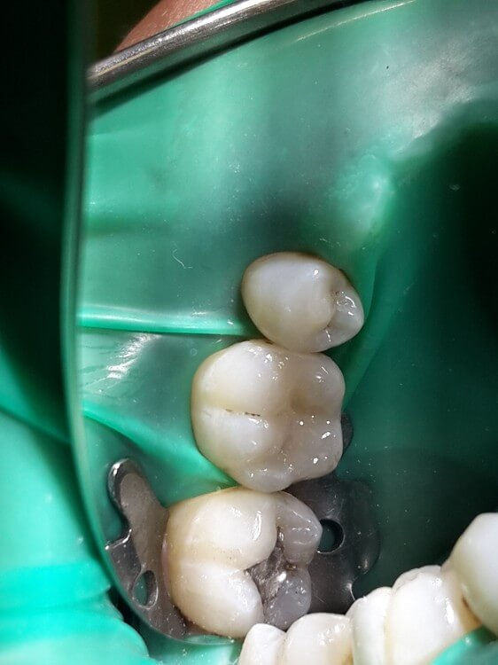
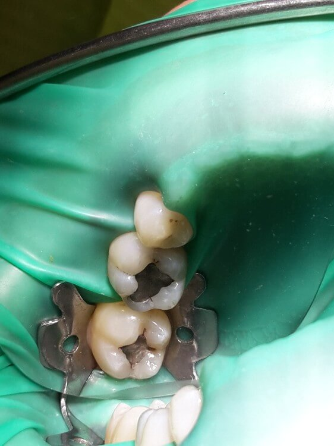
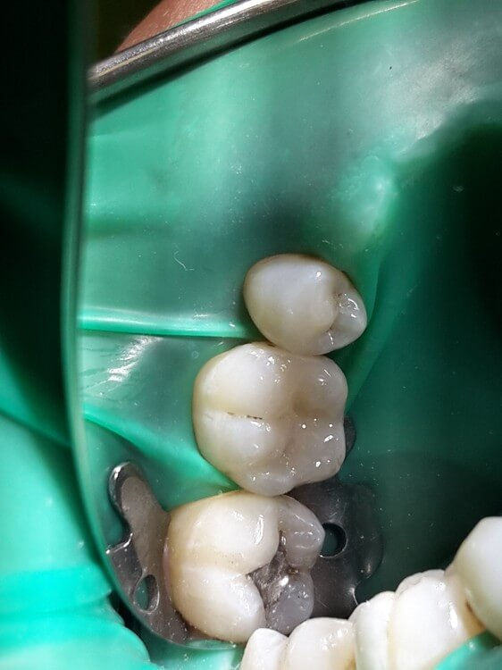
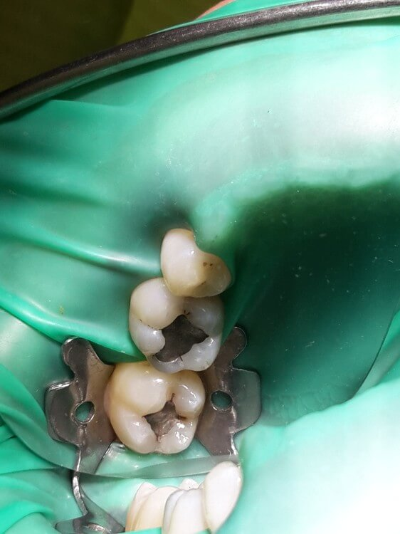
Jedná se o výplň zhotovenou ze světlem tuhnoucí pryskyřice. Díky nejmodernějším materiálům a unikátním technologickým postupům jsme schopni ji zhotovit prakticky na každý zub v dutině ústní. V naší ordinaci používáme materiál Enamel plus HRI, který patří k nejlepším na trhu jak z hlediska estetiky, tak mechanických vlastností. Již dávno neplatí, že bílé výplně jsou určeny pouze pro přední zuby a v zadním úseku chrupu (stoličky) je nelze použít. V současné době, za vhodných podmínek, jsme schopni ošetřit výplní i značně destruované zuby, které bylo v minulosti nutné obrousit na korunku. Moderní postupy nám umožňují při zhotovení těchto výplní maximálně šetřit zubní tkáně a odstranit jen nezbytné minimum.
Postup zhotovení: Celé ošetření je provedeno po aplikaci lokální anestezie, tím je zaručena bezbolestnost výkonu. Pro zhotovení přesné a esteticky vyhovující výplně je nutné striktně dodržet technologický postup, který je složitý. Zub je nutné izolovat od dutiny ústní pomocí koferdamu (gumové blány), tím je zajištěno pohodlí pacienta, jelikož nestékají tekutiny a preparační drť do krku. Dále izolace zajistí, aby v průběhu ošetření nedošlo k průniku bakterií a vlhkosti do ošetřovaného prostoru. Následuje odstranění staré nevyhovující výplně, pokud je přítomna a pečlivé odstranění veškerých infikovaných tkání zubu. Pro maximální kvalitu výkonu používáme zvětšovací pomůcky, jako jsou lupové brýle nebo operační mikroskop a látky schopné barvit infikovanou tkáň zubu, tzv. caries detektor. Po odstranění poškozené tkáně je povrch zubu naleptán 37% kyselinou fosforečnou, opláchnut, osušen a následuje aplikace adhezivního systému (lepidla pro výplň). Ten se osvítí polymerační lampou (intenzivním modrým světlem) a zub je připraven pro aplikaci vlastního výplňového materiálu. Výplň se zhotovuje postupně, materiál v tekuté nebo polotuhé formě je po malých částech nanášen na povrch připraveného zubu a každá vrstva důkladně vytvrzena polymerační lampou. Postupné vrstvení je nezbytné pro mechanické i estetické vlastnosti výplně. Na závěr je povrch výplně upraven pomocí vrtáčků, brousků nebo fréz a vyleštěn. Po výkonu je již povrch výplně vytvrzen a je možné výplň zatížit kousáním. Celý postup je složitý a vysoce náchylný na chyby, a proto je obvyklá doba zhotovení jedné výplně 45 až 90 minut. Tento moderní výplňový materiál a pracovní postup není hrazen zdravotní pojišťovnou
Výplně z ostatních materiálů
V indikovaných případech jsme schopni zhotovit výplně jiných materiálů, jako jsou skloionomerní cementy v různých modifikacích.
Mikroskopická endodoncie a reendodoncie
(ošetření kořenových kanálků)
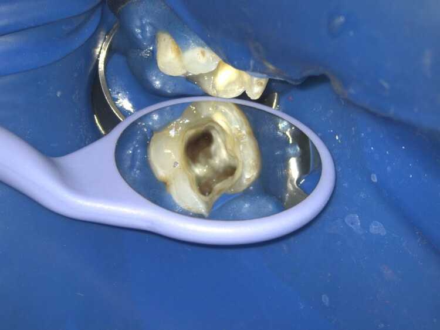
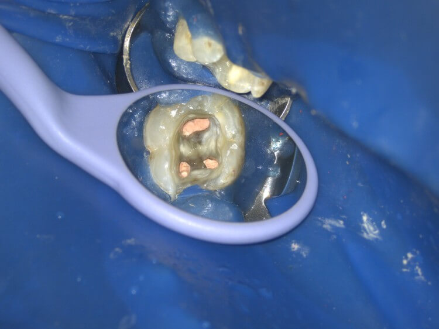
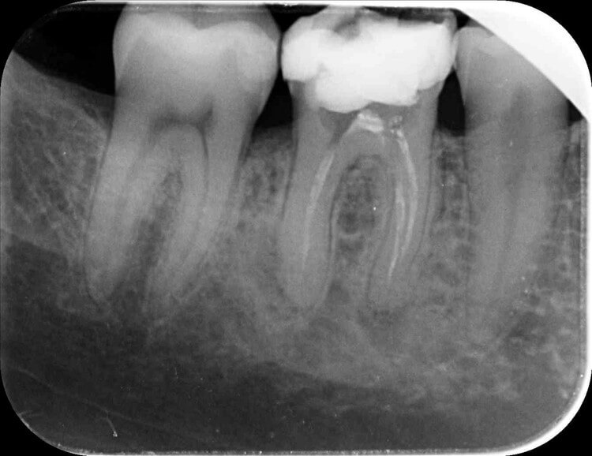
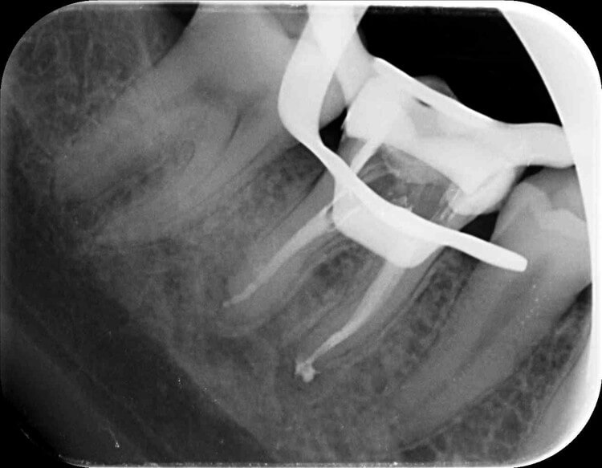
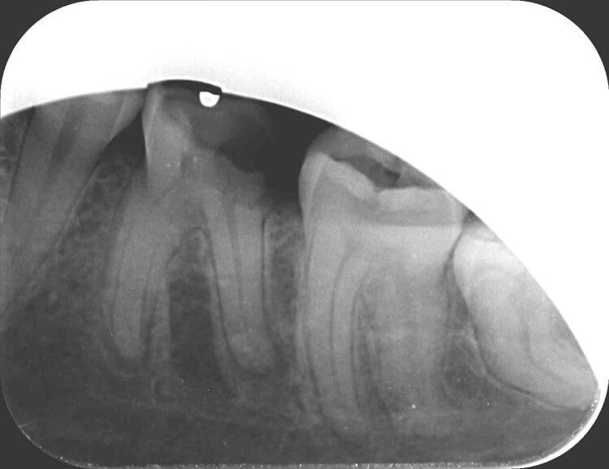
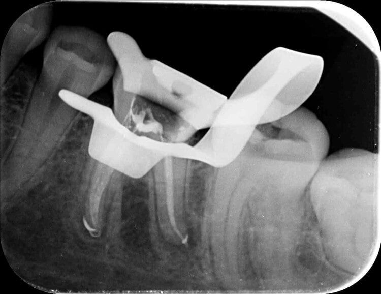
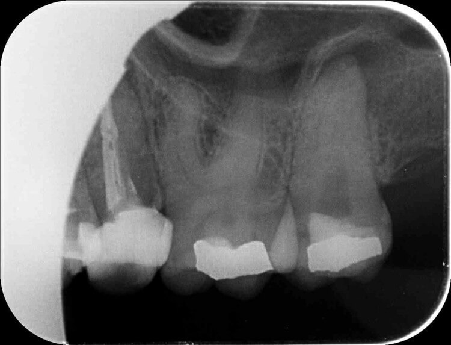
 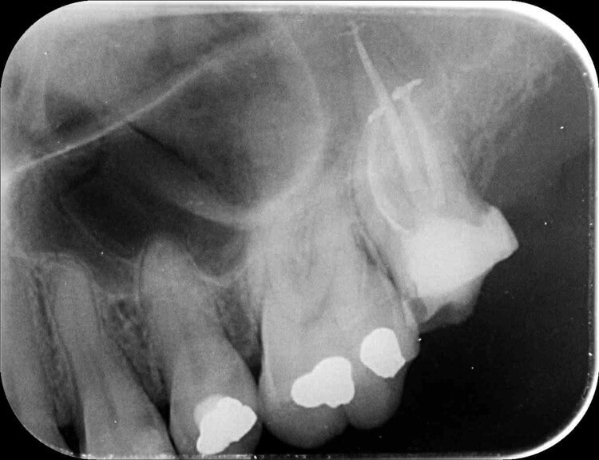
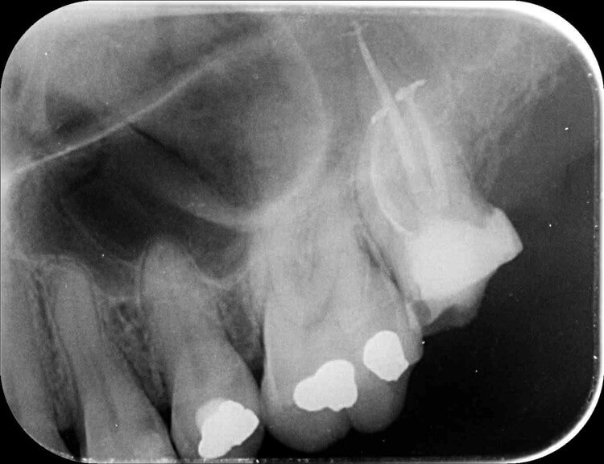
Jedná se o ošetření kořenového systému a dřeňové dutiny zubu. Provádí se při nevratných onemocněních zubní dřeně (pulpy, nervu) a zánětech v okolí hrotu zubu (periodoncia). Mezi nejčastější indikace reendodoncie patří: Zánětlivý proces v okolí kořene zubu, nezaplnění všech kořenových kanálků a tím ponechání infikovaného obsahu uvnitř zubu, nedoplnění všech kořenových kanálků s ponechaným infekčním obsahem, nedostatečná homogenita kořenové výplně, netěsnost kořenové výplně, infikovaní kořenové výplně (pokud byla vystavena dlouhodobě prostředí dutiny ústní). Cílem endodontického ošetření je odstranit postiženou tkáň zubní dřeně a nahradit jí vhodnou kořenovou výplní. U reendodontického ošetření jde o opakované endodontické ošetření zubu, které spočívá v odstranění stávající kořenové výplně, mechanické přípravě kořenového systému zubu, jeho chemické dezinfekci a zhotovení nové kořenové výplně.
Postup zhotovení: Výkon je proveden v místní anestezii, tzn. po aplikaci anestetika do místa operace nebo do okolí nervu, který danou oblast inervuje. Tím je zajištěna bezbolestnost výkonu. Pro provedení výkonu je nutné zub připravit. Příprava spočívá v odstranění nevyhovujících výplní a odstranění veškerých kazivých hmot. Často je nutné zhotovit preendodontickou dostavbu (dostavení všech stěn zubu pomocí fotokompozitního materiálu), která zajistí bezproblémovou aplikaci kofferdamu (gumová blána izolující zub od dutiny ústní) a dostatečnou dezinfekci kořenových kanálků. Pokud je zub ošetřen korunkou nebo je pilířem můstku je možné v určitých případech provést ošetření bez nutnosti jejich sejmutí. Pokud by bránily provedení výkonu, je nutné je sejmout. Je-li zub ošetřen kořenovou inlejí (čepem) nebo frc (vlákny vyztužený kompozit) čepem je nutné je odstranit, protože blokují přístup do systému kořenových kanálků. Odstranění probíhá pomocí ultrazvukových koncovek nebo tvrdokovových vrtáčků. Kořenový systém zubu je často složitý a průměr kanálků velmi malý (i méně než 0,15mm), proto je nezbytné užití zvětšovací techniky jako lupových brýlí nebo operačního mikroskopu. Reendodontické ošetření provádíme výhradně za použití operačního mikroskopu. Tím jsme schopni zajistit maximální možnou kvalitu ošetření a jeho vysokou úspěšnost, která přesahuje 90 %. Vzhledem k výše uvedeným skutečnostem se jedná o výkon časově náročný obvyklá doba výkonu je 1-2 hodiny u endodontického ošetření a 2-3h u reendodoncie. Ve většině případů je ošetření provedeno v jedné návštěvě, aby byla zaručena vysoká úspěšnost výkonu. Podle potřeby je před výkonem, během něj i po něm, provedeno rentgenové vyšetření. Provedením výkonu je často zub oslaben a pro minimalizaci rozlomení zubu je nutné jej opatřit protetickou prací kryjící hrbolky zubu (korunka, overlay)
Tento moderní pracovní postup a použití nezbytných technologií není hrazen zdravotní pojišťovnou.